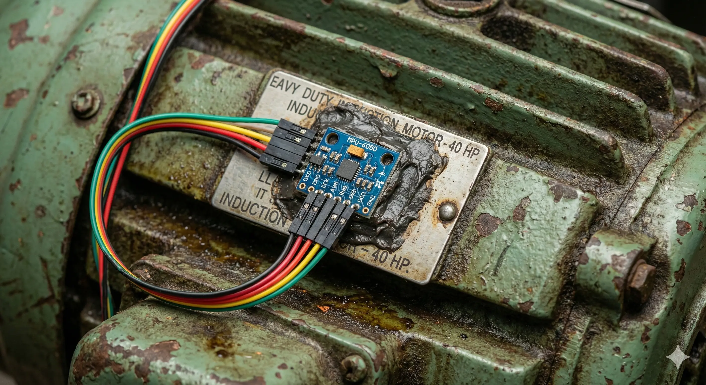
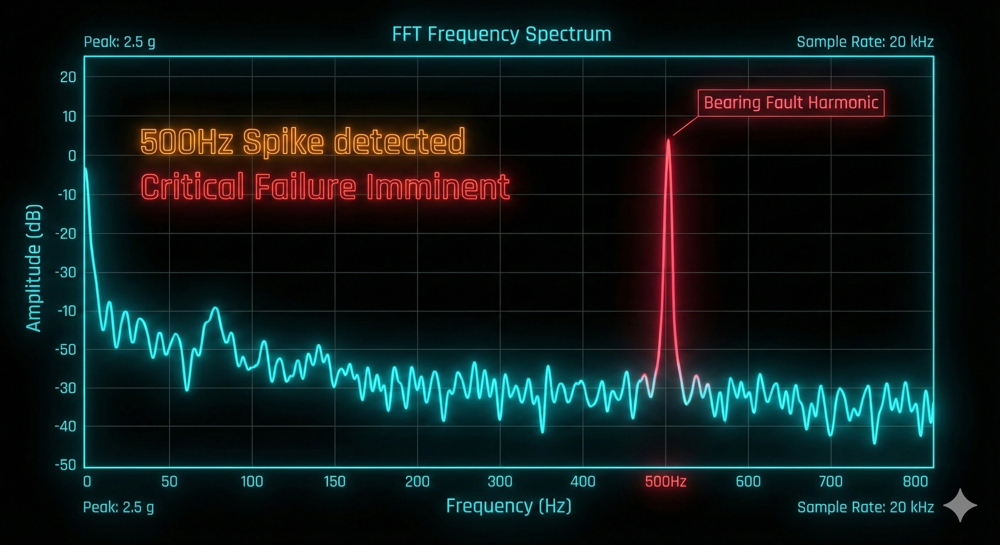

FailPredict
Condition-based predictive maintenance via Physics-Informed AI.
5 Hour Warning. 9.2x ROI.
The Hardware

Fig 2: MPU-6050 Accelerometer ($1.60) on Industrial Motor
The Leakage: Unplanned mechanical failure costs the RMG sector $2.04B annually. Currently, parts are replaced either too early (waste) or too late (catastrophe/line stoppage).
The Physics of Failure: Mechanical faults (like a pitted bearing) create specific vibration frequencies long before they generate heat or noise. By attaching a $1.60 MEMS sensor to the motor housing, we can detect these micro-harmonics using Spectral Analysis.
Inference Logic
-
Feature Extraction
Spectral Analysis (FFT). We don't just look at magnitude; we look at frequency spikes. A spike at 500Hz often indicates a bearing race fault.
-
Neural Core
GRU-128 (Gated Recurrent Unit). Trained on NASA CMAPSS jet engine data, then Transfer-Learned for textile sewing heads to predict Remaining Useful Life (RUL) in hours.
-
Physics Constraint
Pi-Transformer. A physics-informed layer that constrains predictions based on mechanical realities (e.g., friction coefficients), preventing AI hallucinations.
def predict_rul(sensor_data): # 1. Load Pretrained GRU Model (NASA CMAPSS) model = torch.load("models/gru_rul.pt") # 2. Extract Spectral Features (FFT) vib_features = extract_features(sensor_data['vibration']) # 3. Physics-Informed Constraint rul_raw = model(torch.from_numpy(vib_features)) rul_constrained = pi_transformer(rul_raw) # 4. Traffic Light Logic if rul_constrained < 1.0: status = "CRITICAL_STOP" elif rul_constrained < 4.0: status = "WARNING_MAINTAIN_SOON" return {"rul_hours": round(rul_constrained, 2)}
Bill of Materials (BOM)
Dhaka Market Pricing (Nov 2025)
| Component | Spec | Cost (BDT) | Cost (USD) |
|---|---|---|---|
| Compute Node | Pi Zero 2 W / ESP32 | ৳ 1,800 | $15.00 |
| Vibration Sensor | MPU-6050 Module | ৳ 180 | $1.60 |
| Connectivity | MQTT / WiFi | - | - |
| TOTAL CAPEX | $16.60 |
-
Narayanganj Pilot:
Reduced spindle downtime from 23h/mo to 9h/mo.